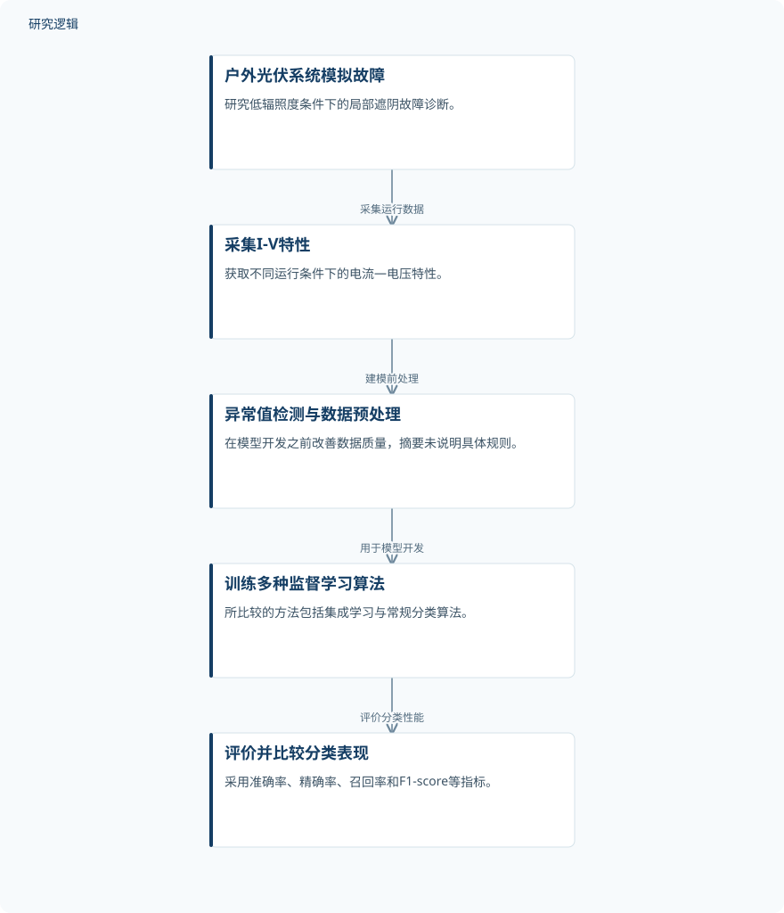

摘要解读
低辐照条件下光伏系统故障诊断的机器学习算法比较研究
Comparative Study of Machine Learning Algorithms for Fault Diagnosis in PV Systems Specifically Under Low Irradiance Conditions
解读更新 2026-11-10 11:08 · 依据公开摘要整理，未核验全文细节
光照较弱时，光伏系统的正常状态与故障状态更难区分，机器学习还能可靠识别局部遮阴故障吗？这项研究通过户外实验比较多种监督学习算法，提示集成学习值得关注，也提醒读者审视诊断性能的工况边界。
文章目录
低辐照度下，局部遮阴还能被识别吗？
随着光伏系统持续普及，可靠的故障诊断对安全、稳定运行愈发重要。摘要指出，既有机器学习诊断研究大多关注高辐照度环境，而低辐照度条件下的有效性仍缺乏充分探索。
本文将问题聚焦于低辐照度下的局部遮阴故障，而非笼统讨论所有光伏故障。其阅读价值在于考察：当运行条件改变、正常与故障状态的差异减弱时，分类算法的诊断能力会怎样变化。
从户外伏安特性到监督分类比较
研究使用户外实验光伏系统模拟故障，并采集不同运行条件下的电流—电压（I-V）特性。在模型开发之前，研究者进行了异常值检测和数据预处理，以改善数据质量；摘要未交代具体处理规则。
随后，研究训练并评估了多种监督机器学习算法，采用准确率、精确率、召回率和F1-score等分类指标进行评价。摘要明确比较了集成学习与常规分类算法，但没有列出具体模型名称。
依据摘要整理的低辐照度故障诊断流程


仅概括摘要明确陈述的数据采集、处理与模型评价关系，不代表论文原图或完整实验配置。
下载 SVG图示关系说明
实线表示相邻阶段的信息流，虚线表示跨阶段联系或反馈。
户外光伏系统模拟故障 → 采集I-V特性：采集运行数据；采集I-V特性 → 异常值检测与数据预处理：建模前处理；异常值检测与数据预处理 → 训练多种监督学习算法：用于模型开发；训练多种监督学习算法 → 评价并比较分类表现：评价分类性能
整体性能趋降，集成学习表现更稳健
摘要报告，低辐照度使正常与故障运行状态之间的差异变得不那么明显，诊断因而更具挑战。与常规辐照度条件相比，所有被评估算法的性能均呈下降趋势，但可靠的故障检测仍然可行。
在所考察的方法中，集成学习比常规分类算法表现更优、更稳健。这支持了其在低辐照度光伏诊断中的应用潜力，但摘要没有给出具体指标值或提升幅度，也未报告实际部署效果。
可行性结论之外，验证边界仍需核对
仅凭摘要，无法判断样本规模、辐照度范围、遮阴设置、类别分布以及训练与测试数据的划分方式，也无法核对模型调参和比较条件。这些属于当前资料未报告的信息，不能据此认定论文没有开展相关工作。
摘要同样不足以判断结果是否经过跨地点、跨季节或不同光伏系统的验证。因此，当前结论应限于研究所考察的条件；面向日照资源有限地区的实际故障检测，仍是摘要强调的应用潜力。
阅读启发：重点追问弱光下的诊断边界
阅读启发：对于智能运维，值得进一步阅读的不是单一的算法排名，而是低辐照度如何界定、哪些运行状态更容易混淆，以及集成学习的优势是否在各项评价指标上保持一致。这些问题有助于理解结论的适用范围，而非预设某类算法普遍占优。
以上为本站阅读启发与建议，不是论文已验证的结论。